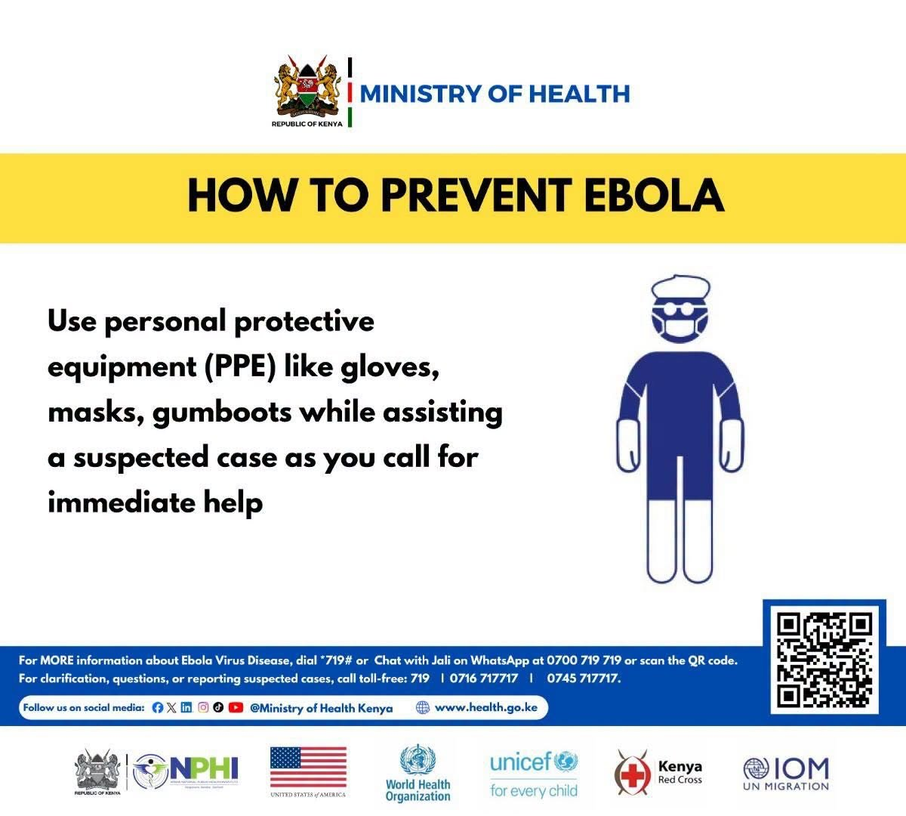

Ministry of Health Issues Ebola Prevention Guidance After Kenya Confirms First Imported Case
News
NAIROBI, Kenya, October 8, 2026: The Ministry of Health has issued public guidance on preventing Ebola after confirming Kenya’s first imported case of Bundibugyo Ebola Virus Disease.
The patient was a Kenyan citizen who had been living in the Democratic Republic of Congo (DRC). Africa CDC says the patient travelled by road from the DRC to Uganda, spent a night there, then flew to Kenya. The patient was quickly identified, isolated and tested, and died on October 6.
Speaking during a tour of Nairobi Hospital’s 133-bed Ebola Isolation Unit, Cabinet Secretary Duale reassured Kenyans that the country is not experiencing an Ebola outbreak. He said the confirmed case was imported.
How to protect yourself
The Ministry advises the public to:
Wash hands frequently with soap and water, or use an alcohol-based hand rub. Avoid close contact with sick people arriving from countries reporting active Ebola transmission. Seek care promptly at a recognised health facility if you feel unwell. Report anyone who is unwell to the nearest health facility. Be honest on health declaration forms if you are travelling, to support surveillance and contact tracing.
The Ministry urges Kenyans to stay vigilant without panic and to follow official Ministry of Health channels for updates. The toll-free 719 health information line is open to anyone seeking guidance.
Contact tracing under way
The Ministry first reported 28 contacts, including family members and health workers who attended to the patient. Its latest update puts the number at 57. Ten have been accounted for and placed under quarantine at the National Police Service Hospital in Nairobi, while tracing of the rest continues.
Kenya’s preparedness
Kenya has been on high alert since May 2026, when outbreaks were declared in the DRC and Uganda. According to the Ministry and WHO:
4,971 health workers have been trained in Ebola prevention and case management. Over 652,000 travellers have been screened at entry points, and 267 suspected samples have been tested. Kenya has 15 isolation and treatment units, with plans to expand to 22, prioritising high-risk counties.
Health workers have been urged to apply infection prevention and control measures consistently. Africa CDC is sending a high-level team to Kenya to support the response and has called for stronger surveillance and cross-border information sharing across the region.